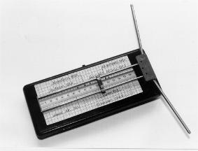
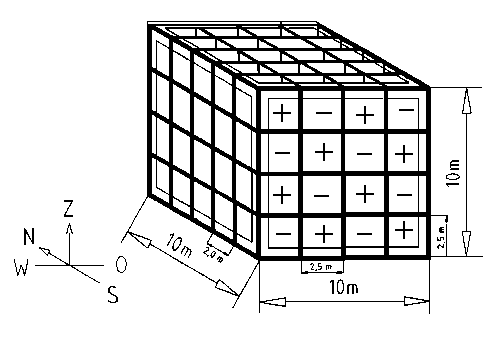

Kristallgitter und Ergebnisse mit der
Luftlecher-Antenne von Will Busscher
Einige Gitterkonstanten
Habe
alle (von mir recherchierten) Gitterkonstanten bezglich Comptonwellenbereinstimmung
(Ce) untersucht, und die folgenden
Treffer gefunden. Die eingerckten sind bis zu 10 pm abweichend
Hier kann mit Java-Script nachgerechnet werden:
Wasser-Resonanz
nach der Gleichung von Frithjof Mller:
L=Z*Ce*2^N
(Z= Kernladungszahl, Ce=Comptonwellenlänge für Elektronenmasse
Ce=h/(mc),
h= Plancksches Wirkungsquantum, c=Lichtgeschwindigkeit, N= ganze Zahl)
JavaScripte:
http://www.aladin24.de/htm/elementarresonanz.htm
Na (Z=11)
gemessen: 428 pm
berechnet:(Z,N)=(11,4) L= 426.9954 pm
Si
(Z=14)
gemessen: 543 pm
berechnet: (Z,N)=(14,4) L= 543.4486 pm
-----
Cu Z=29
----- gemessen: 286 pm
----- berechnet: (Z,N)=(29,2) L= 281.4288 pm
Ru
(Z=44)
gemessen: 427 pm
berechnet: (Z,N)=(44,2) L= 426.9954 pm
Cs
(Z=55)
gemessen: 267 pm
berechnet: (Z,N)=(55,1) L= 266.8721 pm
-----
Ir (Z=77)
----- 383 pm
----- berechnet: (Z,N)=(77,1) L= 373.6209 pm
Es gibt viele weitere Treffer, wenn man L/3 oder L/3/5 betrachtet.
Wie
man sieht, ist bei den genauen Treffern der Faktor 7 und der Faktor
11 vertreten, aus dem sich der erste Nherungsquotient (11/7) fr phi=1,618
bilden lt. Dieses phi spielt beim Kristallaufbau offensichtlich eine
groe Rolle, und wird bei Elementen, die keine 11 oder 7 in der Protonenzahl
haben, vermutlich durch eine Extra-Dynamik erzwungen, die die Zellengre
verndert.
Die
Rolle der 11 und der 7, zusammen mit Wasserstoffresonanzlängen,
findet sich auch wieder im Ägyptischen
Pyramidenbau.
Temperatur in Erdatmosphäre
Hier
sind die Schichthhen der Erdatmosphre,
wie sie bei Callum Coats "Naturenergien" auf Seite 138 genannt werden:
In
den Höhen 3.5 km, 77 km, 85 km und 175 km sinkt die Temperatur
auf +4C.
Diese Längen sind hiermit zu deuten als Wellenknotenschicht der
Erdstrahlung oder vertikalen stehenden Luftwellen von O, H, Si, N und
Ne.
Auswertung
mit Elementarresonanz:
Wasser
und Sauerstoff:
175 km: L(Z=8, N=53) = 174819.65 m
85 km: L(Z=8, N=52) = 87409.82 m
Silizium
und Stickstoff:
77 km: L(Z=14, N=51) = 76483.60 m
77 km: L(Z= 7, N=52) = 76483.60 m
Neon
oder O+H+H :
3.5 km: L(Z=10, N=47) = 3414.45 m
Lecherleitungs-Resonanz-Messungen

Habe
von Herrn Busscher eine Liste von Wellenlngen bekommen, die im Doppelblindversuch
ermittelt wurden: Eine Rute richtig eingestellt, 4 weitere leicht verstellt,
der Rutler darf nur mit der Richtigen einen Ausschlag bekommen. Auch
der Versuchsleiter wei nicht, welche Rute er gerade ausgibt. Die Zahlen
wurden 1995 verffentlicht in
Will Busscher: "Wellenlngen und Frequenzen von radisthetischen
Reizstreifen (Wst-Wellen), Wetter Boden Mensch 2/1995
Hier
meine Vergleichsrechnungen mit der Elementarresonanz:
Fr
die Breite der Lecherleitung werden 24 mm angegeben.
Zwischen den Stben (4 mm dick) sind es aber nur 20 mm.
Wasser-Resonanz nach der Gleichung
von Frithjof Mller:
L=Z*Ce*2^N
L=1*Ce*2^33=20,84 mm
Der Mensch ist zu 95% aus Wasser, deswegen ist diese Breite der richtige
Resonator, um den 'Resonator Mensch' anzusprechen.
Ein technischer Empfnger (den es vielleicht mal spter gibt) sollte
auch mit Wasser arbeiten, oder in Wasser eingetaucht sein.
Wenn
die Wstwellen (Ausbreitung ca. 1-10 m/s, meist 9 m/s) longitudinal
sind, dann sollte man auch mit einer stehenden Schallwelle zwischen
den Stben rechnen, deswegen knnten die Drahtdicken nicht mitzhlen.
---------------------------------------------------------------------------------------
Wellenlngen
Hartmann-Gitter:
146
mm, das ist einwandfrei Silizium-Resonanz (Erde ist auch Si)
L=145,88 mm (Z=14, N=32)
oder auch Luftresosonanz, weil 80% Stickstoff (Z=7, N=33, L wie Si,
weil 14=2*7)
486
mm: =146mm *2*5/3 = 486,7
Das ist mglicherweise eine andere Projektion (Blickrichtung), wenn
man den rumlichen Torkado fr die Si-Energie untersucht.
---------------------------------------------------------------------------------------
Hartmann/Benker-Gitter:
248
mm, das knnte auch Kohlenstoff L=250,1 mm (Z=6, N=34) sein
73 mm, das ist wieder eindeutig Silizium L=72,94mm (Z=14, N=31)
---------------------------------------------------------------------------------------
Vorgriff
(weiteres siehe unten "Gitterkonstanten"):
Die
Wrfel-Kantenlnge (Diamantstruktur) des Si-Gitters betrgt 0,543 nm
und lt sich mit Faktor 2^27 vergrern auf 72,88 mm bzw. 145,76 mm
mit Faktor 2^28.
Die
bereinstimmung mit 73 mm / 146 mm einerseits (Will Busscher, gemessen)
und 72,94mm / 145,88 mm (Frithjof Mller, berechnet) ist doch sehr beeindruckend.
Diese
Energiegitter bilden also mit Sicherheit Riesenschwingungen von Silizium
!
---------------------------------------------------------------------------------------
Magnetfeld und Mensch:
152
mm, das knnte Kupfer sein: L=29*Ce*2^31=151,1 mm.
Der Mensch ist nach dem Mond orientiert in seinen Zyklen, und Kupfer
stimmt Kern-Resonanzmig weitgehend mit dem Mondumlauf berein T=L/c=
29,3 Tage fr (T=(29*Cp*2^94)/c, Cp=h/(mp*c)), hier wurde die Comptonwellenlnge
fr Protonen genommen !
Gleichzeitig
ist die Länge 151,1 mm eine Kernresonanz
(wieder Cp) fr Eisen (L=26*Cp*2^42), das ist doch SEHR interessant
fr Magnete !
(Hinweis: 1995 war Frithjof Mllers Gleichung noch nicht verffentlicht
!)
Kupfer
und Eisen liegen immer so zusammen, weil 26/29 = 0,89655 ist und mp/me=0,89655
* 2^11
Deswegen auch ihre gemeinsame technische Nutzung: Spule und Kern. Sie
sind 'ein Team' fr Schwingkreise und Trafos.
---------------------------------------------------------------------------------------
Wasser,
Hauptzone:
315
mm , das ist Wasserresonanz , multipliziert mit Faktor 15=3*5
Wasserstoff: L=1*Ce*2^33=20,84 mm
20,84 mm
*3*5 = 312,6 mm
Der Faktor
15=30/2=6*5/2 knnte mit dem Menschen als Resonator zusammenhngen,
denn wir sind Kohlenstoffwesen (Z=6) und unsere Nervenzellen sind aus
Calzium (Z=20=4*5).
Denkbar
wäre aber auch eine SiO2-Resonanz (Z=30=14+8+8) von feuchtem Sandboden).
Ebenso denkbar eine dreifache Resonanz des Wassermoleküls (Z=10=1+1+8).
Die Grenebene N=33 kommt sehr oft in technischen Gerten vor, die
man schon benutzt, etwa die Mikrowelle zum Kohlenstoff-Garen in der
Nhe von L=125,04 mm (Z=6, N=33).
---------------------------------------------------------------------------------------
Wasser,
Schwerpunktzone:
45
mm
Wasser 41,68 mm (Z=1, N=34)
---------------------------------------------------------------------------------------
Das
Benker-Gitter

http://www.kurtscheidt.de/GEOST15_53.htm
Die
größeren Strukturen des Benkergitters liegen bei 10 Metern
als Kubus.
Genauer:
Das Benker-Gitter ist das SiO2-Kristall bei N=37, denn Siliziumdioxid
hat die Protonensumme 14+8+8=30.
L = 30*Ce*2^37 = 10.0033 m
Andererseits
kann eine Drittelschwingung des Wassermoleküls mit Z=10=1+1+8 im
Körper des Menschen für diese Resonanzwirkung verantwortlich
sein, wenn Wasser als Haupt-Gravitationsquelle vorliegt (siehe die vorerst
hypothetische Energiekopplung
am Würth-Getriebe)
Universal
Scaling
Bisherige
Daten:
Si, gemessen von Buscher: 146 mm, 73 mm
SiO2, gemessen von Benker: 10 m
Schnittpunkte
bzw. Rasterkreuzungen der 2^N-Entfaltung mit anderen Rastern:
(3/2)^53
/ 2^31 = 1.00209031 ---> N=31 (Busscher 73 mm)
(3/2)^65
/ 2^38 = 1.01576 ---> N=37 (Benker 10 m *2)
(6/2)^24 / 2^38 = 1.02747 schlechter ---> N=37 (Benker 10 m *2)
(7/2)^21 / 2^38 = 0.968922 schlechter ---> N=37 (Benker 10 m *2)
(5/2)^28 / 2^37 = 1.009742 ---> N=37 (Benker 10 m)
(1.618034)^49
/ 2^34 = 1.01245 ---> N=32 (Busscher 146 mm *4)
(1.618034)^36 / 2^25 = 0.994959 ---> N=25 ca. cLicht/vWst
Wstwellen
Wenn
man elektrische/magnetische Frequenzen mutet und Wellenlngen findet,
die nicht L=c/f entsprechen, lt sich zumindest die Hypothese aufstellen,
da nicht die Ausbreitungsgeschwindigkeit c, sondern v=L*f vorliegt.
Der Entdecker dieser Wellen hie Wst und nach ihm wurden sie benannt.
(http://www.geobiologie.de/aktuelle_beitr%C3%A4ge.htm)
Ausbreitungsgeschwindigkeit
der Wst-Wellen ca.: v=10 m/s
exp(9)
/ 2^13 = 0.989
mp/me = 0,89655*2^11
Ich
habe mal das Geschwindigkeitsverhältnis c/v gebildet
c/v
= 2.997925E8/10 = 29979250 = 0,89345 * 2^25
=ca. 2*mp/me*2^13
=ca. 2*mp/me*exp(9)
und daraus gefolgert:
Das knnte bedeuten, die Wstwellen sind um 2^13 langsamere Bewegungsabschnitte
(oberer Umkehrpunkt am Nordpol) eines atomaren Torkados. Sie gehren
im Grunde zu einem 2^13 mal greren Torkado, somit auch zu um Faktor
2^13 vergrerten 'Elektronen'. Bedeutsam wird diese 2^13 erst wegen
der Austauschbarkeit mit e^9 . Der Faktor 2*mp/me=3672 hnelt einem
Wellenwiderstand und pat sehr gut auf Elemente mit Neutronenzahl=Protonenzahl,
wie es bei Silizium zutrifft.
Hinweis:
Der Vergrerungsfaktor bezglich des Kristallgitters liegt bei 2^28,
dabei sollte man bedenken, da das Geschwindigkeitsverhltnis eigentlich
rund 0.9*2^25 ist, also Faktor 2^3=8 kleiner.
146mm/8=18.25mm
wren demnach die eigentlichen resonanten Lngengren. Man sollte einmal
Ohr, Auge und Muskelgren genau vermessen, denn beim Muten ist der
Mensch das entscheidende Resonanzgert. Rutler mit extrem ungewöhnlichen
Körpergrößen müßten deshalb weniger erfolgreich
sein, oder andere Schwingungen finden, die dem Durchschnitt der Menschen
nicht schaden.
Torkado-Seite